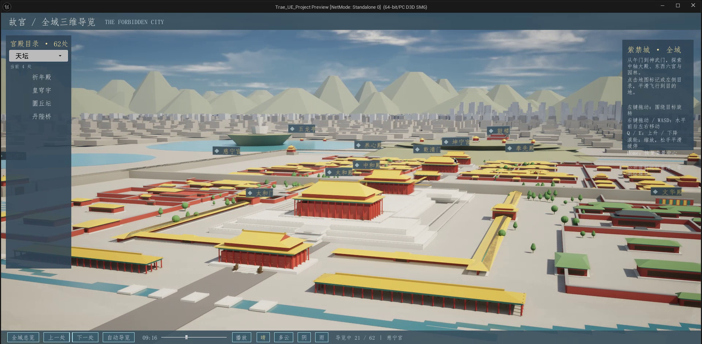

Astra
故宫内部建筑与院落分布较密，周边道路、建筑轮廓及地表环境形成连续的城市背景，内容组织侧重故宫本体与邻近区域。
图 01-A｜故宫与周边道路、建筑轮廓。ASTRA × SEED EVOLVING · COMPARATIVE REVIEW
基于双方构建的 Blender 模型与 Unreal Engine 场景，围绕场景覆盖、建模细节、导览界面及交互功能开展六项对比评估。

建筑近景细节、故宫内部导览，以及室内与结构教学。
北京地标扩展、仿宋视觉风格，以及昼夜天气展示。
故宫内部建筑与院落分布较密，周边道路、建筑轮廓及地表环境形成连续的城市背景，内容组织侧重故宫本体与邻近区域。
图 01-A｜故宫与周边道路、建筑轮廓。场景覆盖故宫及景山、北海、钟鼓楼、天坛等北京地标，展示范围较广；远景建筑与山体采用概括化建模。
图 01-B｜故宫中轴及周边环境。Astra 侧重故宫内部空间层次与场景密度；Seed Evolving 侧重跨区域地标覆盖。
太和殿模型呈现较密集的瓦垄、门窗格栅、檐下构件与台基栏杆，近景几何信息较丰富。
图 02-A｜太和殿模型，统一渲染参数。太和殿模型保留重檐、红柱、屋脊与台基等主要形态，屋面、门窗及檐下构件的细分程度较低。
图 02-B｜太和殿模型，统一渲染参数。在统一渲染参数下，Astra 太和殿样本的几何细节更丰富；Seed Evolving 样本侧重建筑整体形态。
目录包含 152 个兴趣点（POI），提供名称搜索、分区筛选、资料与全景入口；界面以信息检索和内容展示为主。
图 03-A｜152 处目录、搜索与侧边介绍，图中为太和殿。目录包含 62 个兴趣点（POI），提供分区列表与建筑信息卡；仿宋字体及金色文字强化传统建筑主题，但小字号细笔画的辨识度相对有限。
图 03-B｜62 处目录及太和殿信息卡。Astra 在目录细分与资料访问方面更完整；Seed Evolving 在中文字体及主题视觉表达方面更鲜明。
提供全域环绕、平移与飞行，以及太和殿第一人称室内场景；室内可观察宝座、柱饰和匾联等内容，支持步行与碰撞交互。
图 04-A｜太和殿可进入室内的陈设与匾联画面。主要提供全域环绕、平移、缩放、WASD/QE 移动与 POI 定位飞行；已核验成品资料未呈现同等细化的室内步行场景。
图 04-B｜全域漫游侧向视角与操作界面。Astra 在室内空间展示与第一人称探索方面更完整；Seed Evolving 侧重全域浏览及地标定位。
太和殿 30 个网格按屋面、椽子、檩条、斗拱、梁柱、台基划分为六层，并配置中文层名；独立展示背景有利于辨识构件层级。
图 05-A｜六层拆解及中文层名，背景隔离。太和殿 13 个部件在原场景内分层展开并支持复位，拆解过程中保留与周边建筑的空间关系。
图 05-B｜太和殿场景内构件拆解。Astra 的构件分层及标注更适用于结构教学；Seed Evolving 更侧重场景内的拆解展示。
现有成品以固定日光环境为主；在已核验界面与导览代码范围内，未发现对应的时间轴或天气切换功能。
图 06-A｜日光环境与导览操作界面。提供 24 小时时间滑块、播放与暂停，以及晴、多云、阴、雨切换。傍晚 18:05 场景呈现暖色光照与较长阴影，建筑轮廓及场景层次清晰可辨。
图 06-B｜傍晚 18:05 环境与时间、天气控件。Seed Evolving 在时间与天气控制的功能覆盖方面更完整，具备多时段环境展示能力；Astra 当前以固定日光下的建筑与导览展示为主。